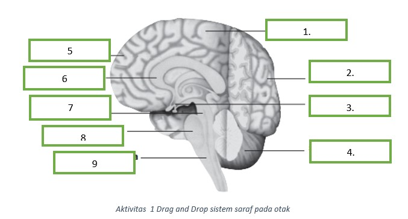

Talamus, terletak di bagian anterior dari medula oblongata dan terdiri atas dua tonjolan sisi.
Hipotalamus, terletak tepat di bawah talamus dan berperan dalam pemeliharaan keseimbangan dinamis tubuh dengan pengendalian tertentu, misalnya nafsu makan, tidur, suhu tubuh, dan keseimbangan cairan tubuh. .
Otak tengah, merupakan daerah sempit antara talamus dan pons varoli, terlibat dalam refleks-refleks visual tertentu.
×
Lobus frontalis,Fungsinya mengendalikan aktivitas mental dan
gerakan otot.
×
Corpus Callosum adalah seikat serabut saraf yang terdapat di antara belahan otak kiri dan kanan, Serabut saraf ini menghubungkan dan memungkinkan komunikasi antara kedua belahan otak tersebut
×
Talamus bertindak sebagai pemancar untuk hampir semua informasi yang datang dan berjalan di antara otak dan seluruh sistem saraf di tubuh.
×
pons terletak antara otak tengah dan medulla oblongata. Di bagian batang otak ini terdapat saraf-saraf kranial yang berperan dalam mengendalikan ekspresi wajah dan menjaga keseimbangan dan koordinasi tubuh. Pons juga berfungsi dalam mengatur pernapasan.
×
medula oblongata berperan juga sebagai
pusat pengaturan gerak refleks detak jantung, suhu tubuh, dan vaso
dilatasi atau vaso konstriksi (pelebaran atau penyempitan) pembuluh
darah Batang otak memiliki bagian-bagian
×
Gambar 2 Midsagital otak
×
Lobus ini berfungsi mengendalikan gerakan, ucapan, perilaku, memori, emosi, kepribadian, dan berperan dalam fungsi intelektual, seperti proses berpikir, penalaran, pemecahan masalah, pengambilan keputusan, dan perencanaan.
×
Lobus ini berfungsi mengendalikan gerakan, ucapan, perilaku, memori, emosi, kepribadian, dan berperan dalam fungsi intelektual, seperti proses berpikir, penalaran, pemecahan masalah, pengambilan keputusan, dan perencanaan.
×
Hipotalamus memiliki fungsi sebagai pengatur dalam sistem saraf atau memastikan dan mempertahankan semua sistem tubuh tetap berjalan stabil
×
Otak kecil (serebelum) terletak di bawah dari lobus oksipitalis
serebrum. Bagian otak ini terbagi dua kiri-kanan oleh fisura yang
dangkal. Otak kecil berfungsi pengaturan gerak dan
keseimbangan tubuh.
Agar mengetahui apa saja bagian yang ada pada system saraf silahkan isi mengenai drag and drop dibawah iniAgar mengetahui apa saja bagian yang ada pada system saraf silahkan isi aktivitas 1 mengenai drag and drop dibawah ini
Aktivitas 1

Gambar soal drag and drop
isilah table di bawah ini berdasarkan nomer yang tertera pada gambar diatas.
Sumsum tulang belakang terletak di dalam saluran ruas-ruas tulang belakang (kolumna vertebralis),
terdiri atas ribuan neuron (sel saraf), dan diselubungi oleh selaput pembungkus (meninges).
Sumsum tulang belakang terdiri atas dua bagian, yaitu bagian abu-abu di tengah dan bagian putih di pinggir.
Gerak refleks adalah respons tidak sadar terhadap rangsang tertentu.
Refleks ini merupakan mekanisme penting untuk memelihara kenormalan fungsi tubuh.
Misalnya, batuk dan bersin adalah refleks pemeliharaan dari gangguan sistem pernapasan.
Refleks-refleks yang sederhana hanya memerlukan paling banyak tiga buah sel saraf (neuron) untuk menghasilkan aksi terhadap sebuah rangsang yaitu neuron sensoris interneuron-neuron motoris.
Refleks dapat diselesaikan melalui lengkung refleks, yaitu jalan terpendek yang ditempuh suatu gerak refleks, seperti refleks sentakan lutut
×
Gambar 3 Gerak reflek
Mari mencoba
Mari kita simak dibawah ini untuk mengidentifikasi peranan system saraf dalam bagian saraf pusat dan saraf tepi dengan pendemonstrasian gerak